Pitch Personnel
Bonjour, je m'appelle Ronan Morales, j’ai 19 ans et je suis actuellement en deuxième année de BUT Informatique à Castres, spécialisé dans le parcours "Réalisation d’applications : conception, développement, validation". Après l'obtention de mon BAC STI2D (spécialité SIN) au Lycée Las Cases avec mention assez bien, j'ai décidé de m'engager dans la réserve opérationnelle de l'armée de terre parallèlement à mes études supérieures. Initialement intéressé par la classe préparatoire TSI du lycée Pierre-Paul Riquet (Saint-Orens), j'ai finalement privilégié le BUT Informatique de Castres afin de me rapprocher du 8e RPIMa. Ce choix stratégique m'a permis de réaliser ma formation académique et mon engagement militaire. Cette double expérience est un atout car, le BUT développe mes compétences collaboratives (travail en équipe, communication), tandis que l'armée renforce mon autonomie, mon écoute et ma rigueur.Pitch Thématique
À l’issue de l’obtention de mon diplôme, je ferai le choix de m’insérer directement dans la vie active. Mon objectif sera de mettre pleinement mes compétences au service d'une entreprise en tant que développeur web front-end. Pour réussir cette transition et me consacrer totalement à mes projets techniques, je quitterai mon poste d'équipier polyvalent chez Lidl. Si ce contrat en CDI m'aura permis de financer sereinement mon cursus, je souhaiterai alors m'alléger de cette charge de travail pour concentrer toute mon énergie sur mon premier emploi dans le numérique.Hard Skills
Développement technique et maîtrise des outils informatiques acquis durant ma formation et mes projets personnels.
Java & Python
HTML, CSS & JS
Node.js & Express
PHP & MySQL
GitLab & GitHub
Figma (UX/UI)
Soft Skills
Qualités humaines et relationnelles développées notamment à travers mon engagement dans l'armée de terre et mes expériences professionnelles.
Leadership
Rigoureux
Sérieux
Autonome
Créatif
Mes compétences
S3.01 Maps Industry
J'ai choisi de vous présenter la compétence Administrer , que j'ai pu développer au cours de la SAE Maps Industry (S3.01) . L'objectif de cette SAE était de réaliser un client léger (site web) et un client lourd (application bureau) permettant de planifier des itinéraires touristiques entre différentes villes.Pour ce faire, nous avons installé et configuré deux serveurs sur des machines virtuelles : l'un dédié à la base de données et l'autre à l'hébergement de l'API et du client léger. Cette démarche s'inscrit directement dans l'apprentissage critique AC 13.03, qui consiste installer et configurer un système d'exploitation et les outils de développement. Je vais maintenant vous présentez les critére d'évaluation que j'ai choisi.
CE 3.01 - En sécurisant le système d'information
Pour valider ce critère, nous avons mis en place des solutions robustes afin de sécuriser nos serveurs (API et BDD).API
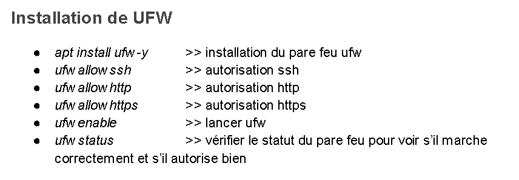
Configuration du pare-feu avec UFW : Nous avons d'abord déployé UFW (Uncomplicated
Firewall). Ce pare-feu nous permet de restreindre l'accès au serveur en fermant par défaut
tous les ports inutilisés, limitant ainsi la surface d'attaque. Nous avons spécifiquement
autorisé les connexions SSH (pour l'administration à distance), ainsi que le HTTP et le
HTTPS pour
l'accès aux services web.
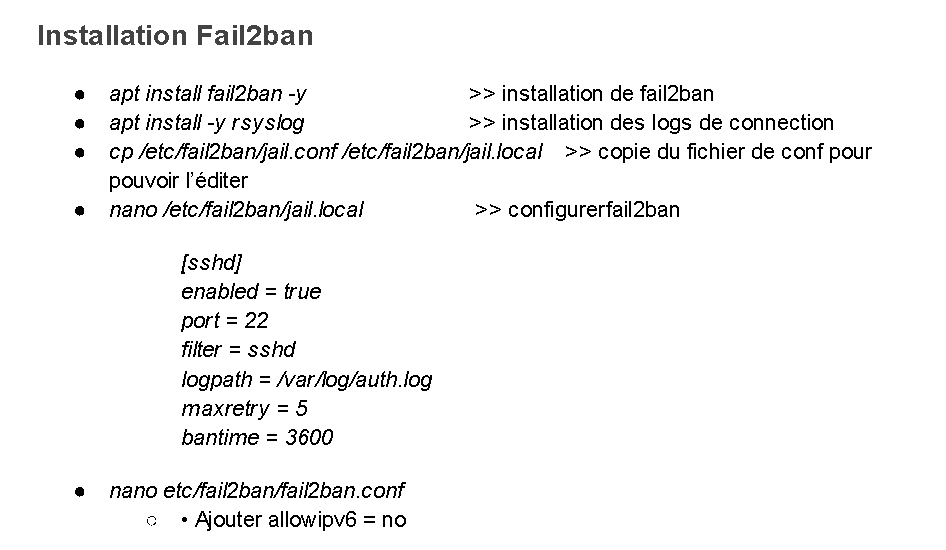
Protection proactive avec Fail2Ban : En complément du pare-feu, nous avons installé
Fail2Ban. Cet outil analyse les logs du serveur en temps réel pour détecter des
comportements suspects, comme des tentatives de connexion répétées par force brute. Dans
notre configuration, nous avons instauré un bannissement automatique de l'adresse IP de
l'attaquant pendant 3600 secondes après 5 tentatives infructueuses.
BDD
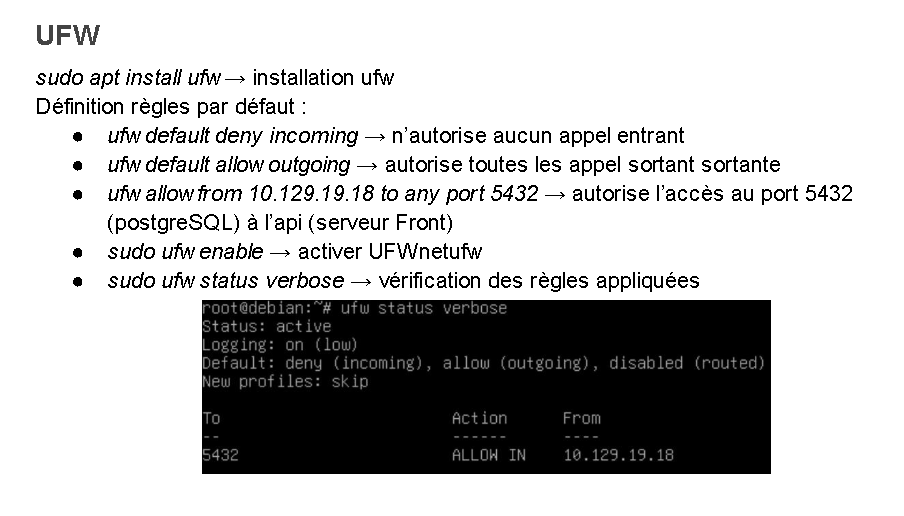
Configuration du pare-feu avec UFW : Nous avons d'abord déployé UFW (Uncomplicated
Firewall). Ce pare-feu nous permet de restreindre l'accès au serveur en fermant par défaut
tous les ports inutilisés, limitant ainsi la surface d'attaque. Nous avons spécifiquement
autorisé les connexions SSH (pour l'administration à distance), ainsi que le HTTP et le
HTTPS pour
l'accès aux services web. Nous avons restreint les accès au port 5432 uniquement via
l'adresse ip 10.129.19.18 .
CE 3.03 - En appliquant les normes en vigueur et les bonnes pratiques architecturales et de sécurité
1. Configuration de l'architecture système
Pour assurer la stabilité des liaisons entre les services, j'ai configuré des adresses IP fixes (10.129.19.18 et 10.129.19.19) en modifiant le fichier /etc/network/interfaces. Sur le serveur API, j'ai mis en place un environnement Node.js avec le framework Express. Sur le serveur BDD, j'ai installé et configuré PostgreSQL.API
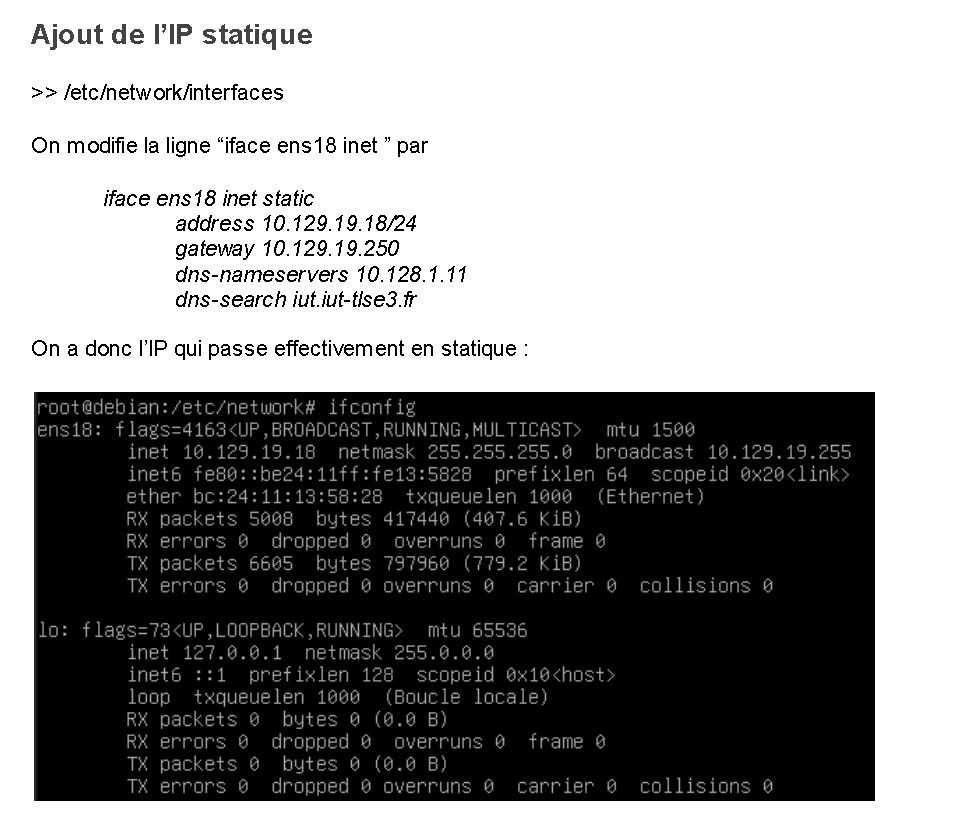
La configuration en ip statique est indispensable pour mettre en place des règles de
sécurité restrictives comme
celles que nous avons mis en place avec UFW. Cela nous sera aussi utile du côté de la BDD,
car nous pourrons restreindre l'accès au port 5432 depuis une adresse ip statique.
Nous avons fixer l'ip à 10.129.19.18 .
BDD
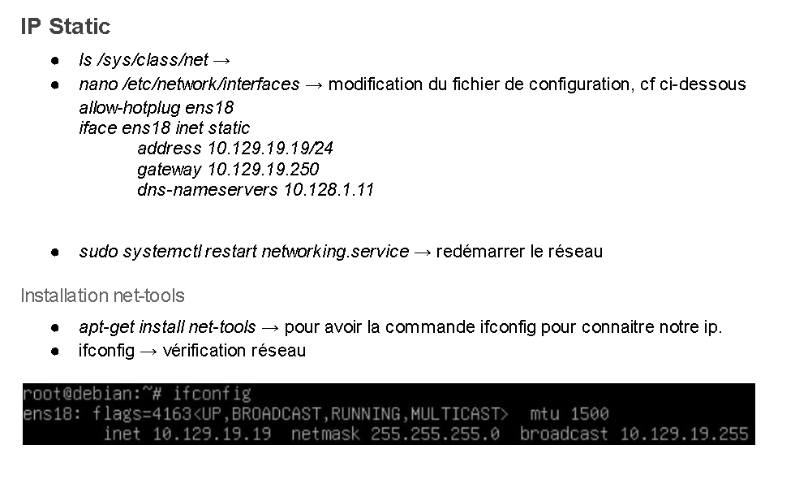
La configuration en ip statique est indispensable pour mettre en place des règles de
sécurité restrictives comme
celles que nous avons mis en place avec UFW. Nous avons fixer l'ip à 10.129.19.19 .
2. Sécurisation et contrôle des accès
Sur le serveur API, j'ai autorisé uniquement les ports SSH, HTTP et HTTPS.
Sur le serveur BDD, j'ai appliqué une règle stricte n'autorisant que les connexions
entrantes
sur le port 5432 provenant exclusivement de l'IP du serveur API.
J'ai déployé Fail2Ban pour surveiller les journaux d'accès
(auth.log) et bannir automatiquement toute IP après 5 tentatives de connexion infructueuses
pendant une durée de 3600 secondes.
J'ai configuré le serveur OpenSSH en créant des utilisateurs
spécifiques (Ronan, Alexandre, Toma, Télio) rattachés à un groupe dédié pour restreindre les
droits d'administration.
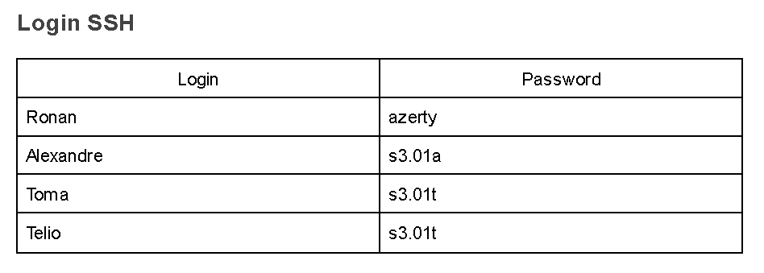
3. Maintenance et validation
J'ai veillé à la stabilité du système en
exécutant systématiquement les commandes apt update et apt upgrade.
Pour valider le bon fonctionnement de l'architecture, j'ai utilisé des
outils comme Telnet pour vérifier l'ouverture des ports entre les serveurs et ifconfig pour
valider la configuration réseau.
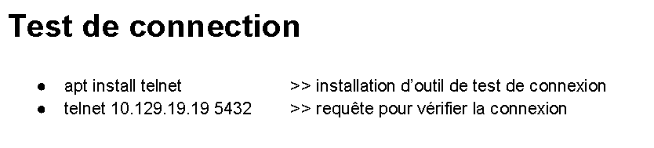
Pour conclure, je suis dans la maîtrise de ces compétences, car je suis
capable d'installer un système d'exploitation ainsi que des outils de développement de manière
Autonome.
S2.04 Gamers
Dans le cadre de notre projet de SAE S2.04, mon binôme et moi avons conçu l'application web « Gamers » en utilisant l'outil Oracle APEX. Ce projet, réalisé en 14 heures, nous a permis de mobiliser des compétences spécifiques liées à la compétence Réaliser, notamment à travers l'élaboration de spécifications et le respect des contraintes techniques. Pour cette compétences j'ai choisi de vous présenter l'apprentissage critique AC 21.01 qui consiste a élaborer et implémenter les spécifications fonctionnelles et non fonctionnelles.CE 1.01 - En respectant les besoins décrits par le client
Nous avons fait en sorte qu'un joueur ne puisse déposer d'avis que pour un
jeu qu'il possède, et qu'il ne puisse pas poster plusieurs avis pour un même titre.
Comme demandé, les mots de passe sont stockés sous forme hachée en SHA256
pour protéger les utilisateurs.
Nous avons assuré l'unicité des pseudos, des emails et des titres de jeux au sein de
la base de données.
Bien que la quasi-totalité des besoins ait été couverte, nous avons identifié que le
filtrage des tournois par année reste une perspective d'évolution pour une version future.
Notre projet a répondu à la totalité des besoins exprimer par le client.

CE 1.06 - En choisissant les ressources techniques appropriées
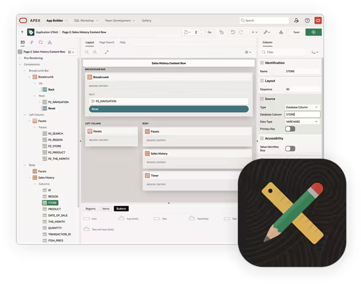
Nous avons choisi cette plateforme car elle simplifie le développement en nous
permettant de nous concentrer sur la structure de la base de données plutôt que sur le
développement front-end complexe.
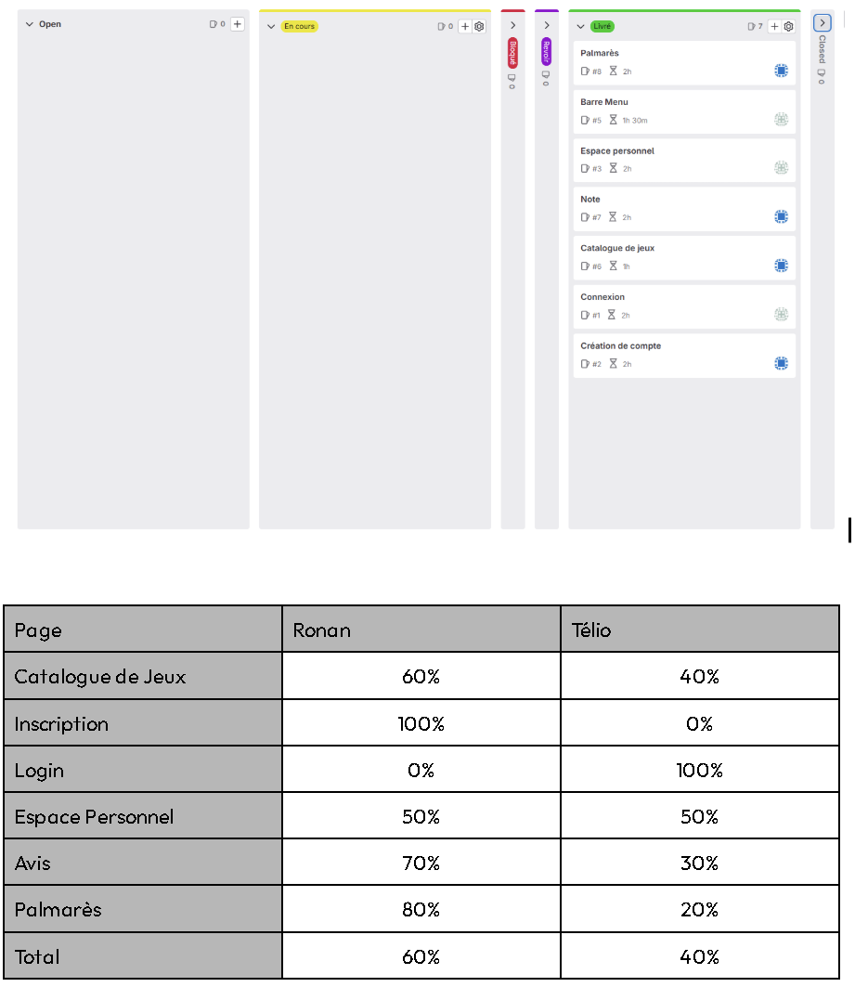
Télio a utilisé SQL et PL/SQL pour gérer les requêtes de données et générer les
graphiques du palmarès.
Pour organiser notre travail d'équipe, nous avons utilisé un tableau
Kanban et les outils de gitLab, ce qui nous a permis de suivre l'état d'avancement des
tâches (Barre Menu, Note,
Connexion, etc.) en temps réel.
Répartition des rôles : Ronan s’est principalement concentré sur le front-end et les
tableaux,
tandis que Télio a géré le back-end, notamment la gestion des sessions par cookies.
Pour conclure, je suis dans la maîtrise de cette compétence ainsi que des différents critères
D'évaluation que je vous ai présentée. Je suis en maîtrise pour ces compétences car je suis
dans la capacité de réaliser et implémenter les spécifications fonctionnelles et non
Fonctionnelles pour un client de maniére autonomes.
S3.01 Maps Industry
J'ai choisi de vous présenter la compétence Conduire. Dans le cadre de notre projet de SAE Maps Industry (S3.01), l'objectif de cette SAE était de réaliser un client léger (site web) et un client lourd (application bureau) permettant de planifier des itinéraires touristiques entre différentes villes.,Pour ce faire, nous avons installé et configuré deux serveurs sur des machines virtuelles : l'un dédié à la base de données et l'autre à l'hébergement de l'API et du client léger. Pour cette compétences j'ai choisi de vous présenter l'apprentissage critique AC 25.04 qui consiste a définir et mettre en oeuvre une démarche de suivi de projet. Je vais donc vous expliquer comment et avec quel outil nous avons réalisé cela.
CE 5.01 - En communiquant efficacement avec les différents acteur d'un projet
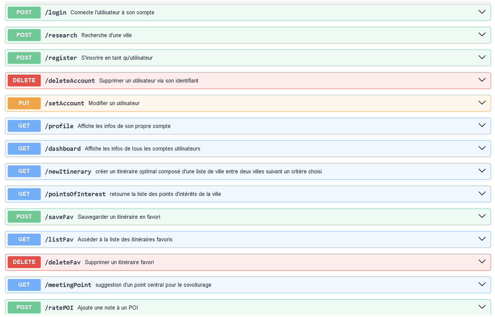
La communication avec les différents acteurs a été possible grâce à un document fourni
par
Le client lors du lancement de la SAE. Grâce à celui-ci, nous avons pu réaliser des
diagrammes
De séquences, des scénarios d'utilisation et des diagrammes de classe. La communication
est
aussi possible avec d'autres
Collègue développeur grâce à la documentation de l'API que nous avons réalisée.
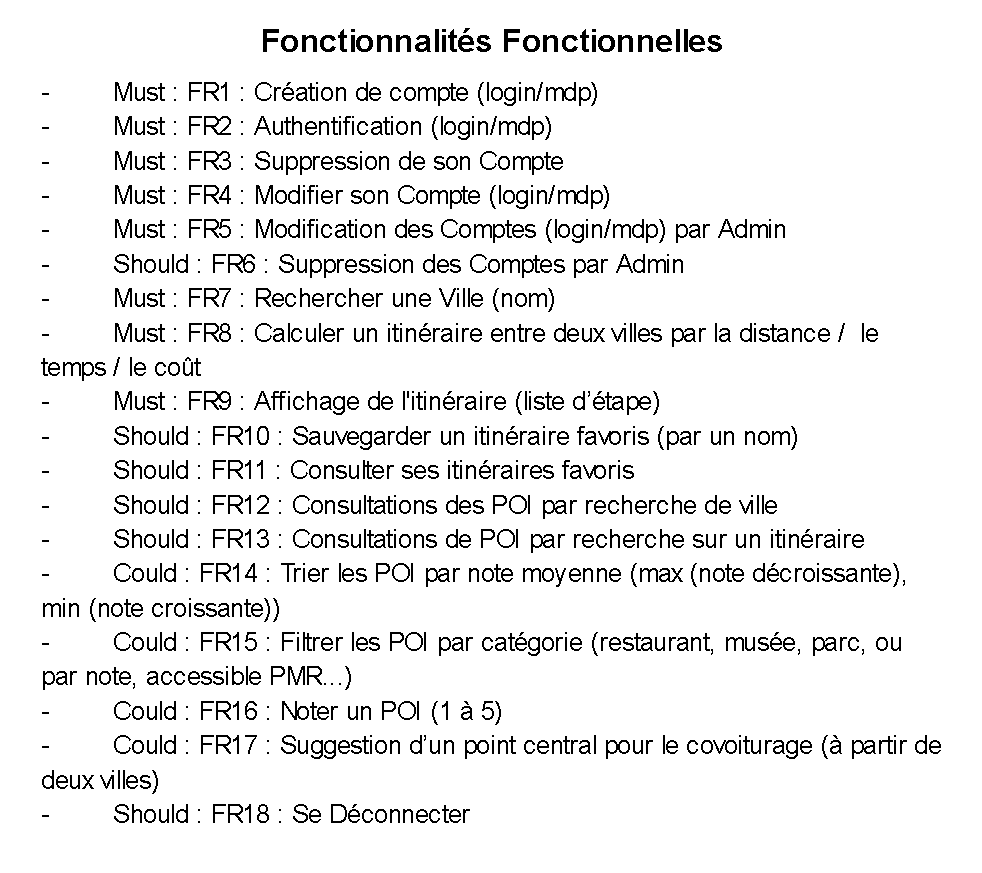
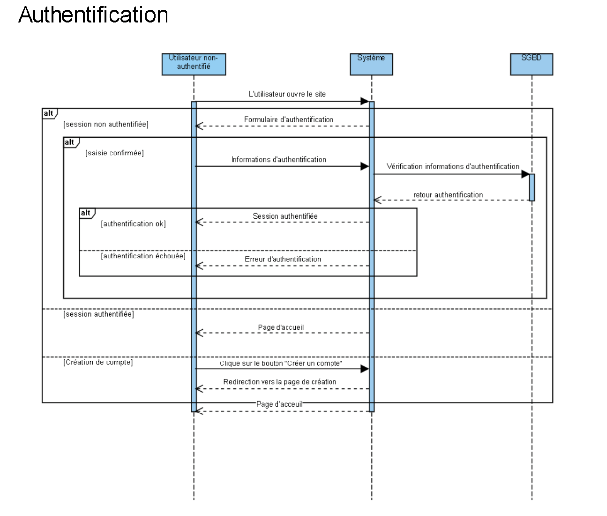
CE 5.04 - En adopant une démarche proactive, crétive et critique
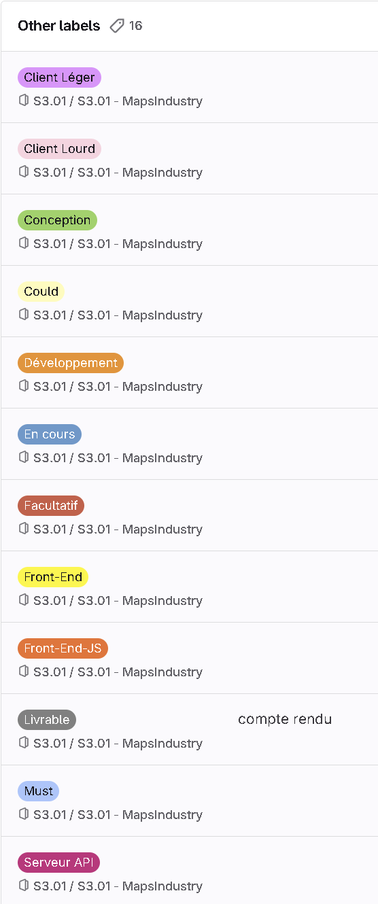
Lors de la réalisation de cette SAE nous avons utiliser les outils de l'application
gitLab,
cela comprend les labels, les issues et les milestones.
Pour piloter le projet Maps Industry, mon groupe et moi avons mis en place cinq Milestones afin de segmenter les différentes phases de développement. Ces milestones concernent le serveur API, le client lourd, le client web, la base de données (BDD) et la période de compte rendu. Cela nous permet de nous rendre compte de l'avancement du projet en temps réel. Cela nous permet de respecter nos échéances et d'ajuster notre charge de travail en fonction des priorités temporelles.
L'Issue Board nous permet de manière visuel de nous rendre compte des tâches à effectuer, organisé en colonnes "Open", "En cours" et "Closed". Ce tableau Kanban nous permet de suivre le cycle de vie de chaque fonctionnalité, du calcul d'itinéraire à la gestion des points d'intérêt (POI). Nous y retrouvons des tickets précis, comme le ticket #99 "Calculer un itinéraire" actuellement en cours de traitement, ou le ticket #101 concernant la « Suppression de comptes » déjà clôturé. Cette méthode garantit que chaque membre de l'équipe sait exactement sur quoi travailler, évitant ainsi les doublons.
Enfin, nous utilisons une stratégie de Labels très détaillée pour qualifier chaque tâche. Grâce à ces 16 labels différents, nous pouvons filtrer nos 40 tickets ouverts et 57 tickets fermés pour obtenir une vision claire. 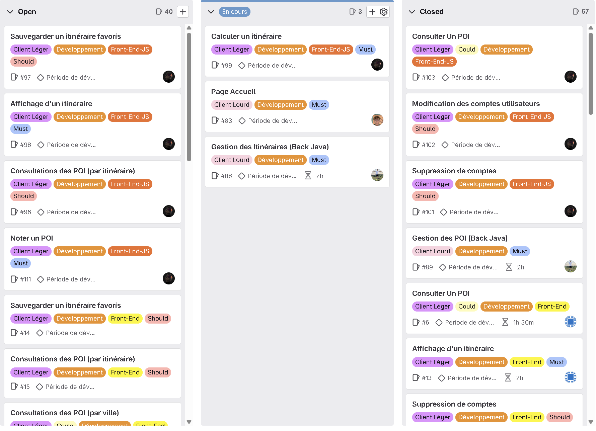 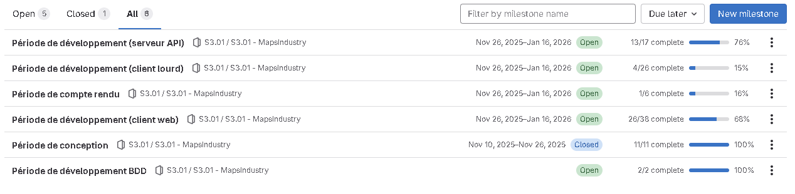
En conclusion, j'ai une expertise dans ce domaine. Je suis en mesure de
transmettre mon savoir à une personne novice et je maîtrise parfaitement les outils que je vous
ai présentés.
Pour piloter le projet Maps Industry, mon groupe et moi avons mis en place cinq Milestones afin de segmenter les différentes phases de développement. Ces milestones concernent le serveur API, le client lourd, le client web, la base de données (BDD) et la période de compte rendu. Cela nous permet de nous rendre compte de l'avancement du projet en temps réel. Cela nous permet de respecter nos échéances et d'ajuster notre charge de travail en fonction des priorités temporelles.
L'Issue Board nous permet de manière visuel de nous rendre compte des tâches à effectuer, organisé en colonnes "Open", "En cours" et "Closed". Ce tableau Kanban nous permet de suivre le cycle de vie de chaque fonctionnalité, du calcul d'itinéraire à la gestion des points d'intérêt (POI). Nous y retrouvons des tickets précis, comme le ticket #99 "Calculer un itinéraire" actuellement en cours de traitement, ou le ticket #101 concernant la « Suppression de comptes » déjà clôturé. Cette méthode garantit que chaque membre de l'équipe sait exactement sur quoi travailler, évitant ainsi les doublons.
Enfin, nous utilisons une stratégie de Labels très détaillée pour qualifier chaque tâche. Grâce à ces 16 labels différents, nous pouvons filtrer nos 40 tickets ouverts et 57 tickets fermés pour obtenir une vision claire. 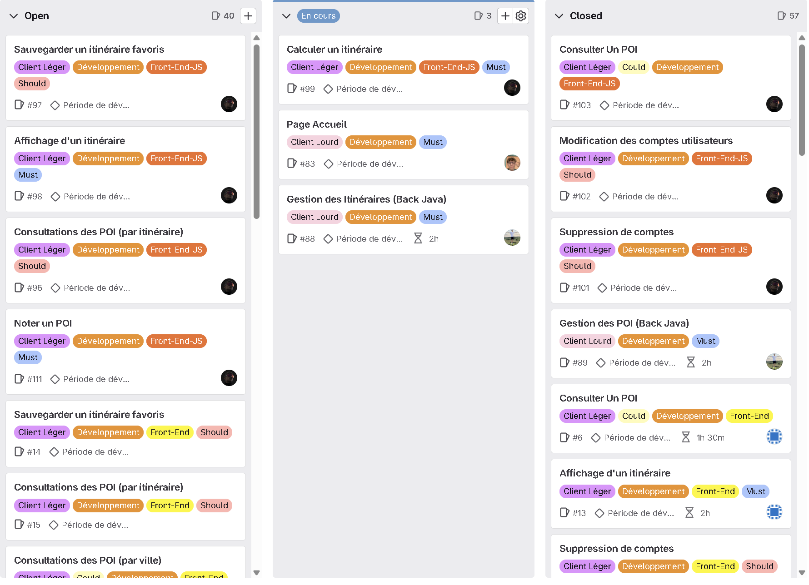 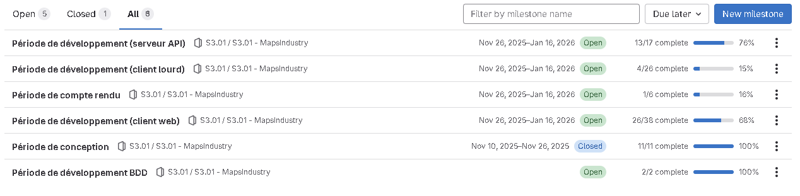